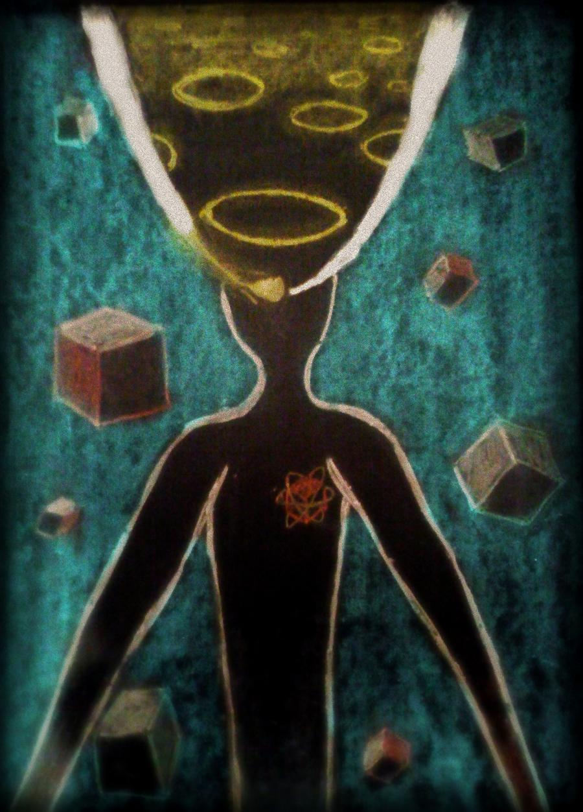

This Holy Reality - Parabola
Inspired by the song “Parabola” by Tool.
1 of 4
- This Holy Reality - Parabola
- Within the Emptiness - Hyperbola
- Tedious Path - Ellipse
- Watch the Weather - Circle
Inspired by the song “Parabola” by Tool.
1 of 4